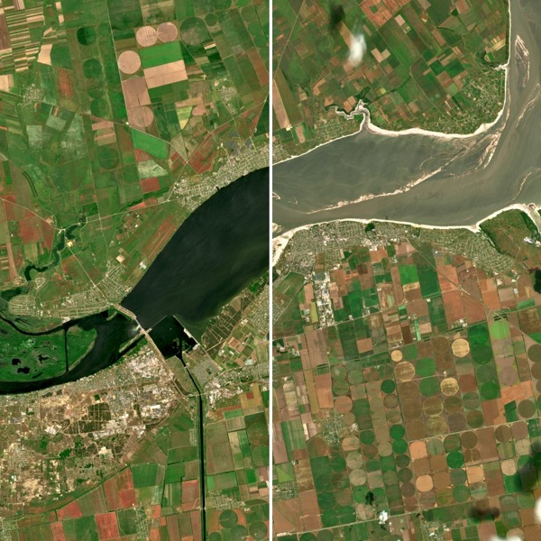
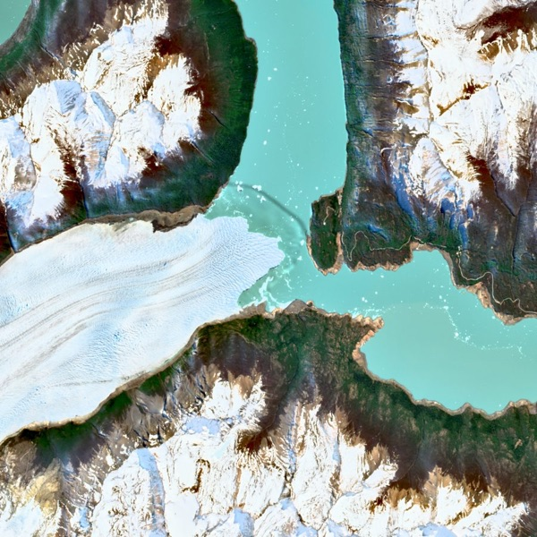
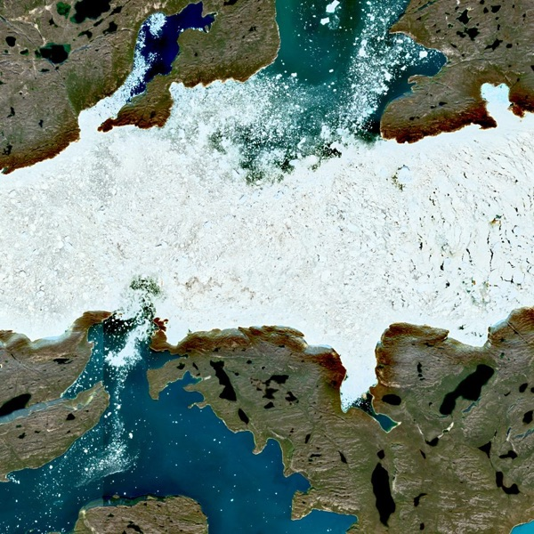

The Earth from space, any day
SnapPlanet pictures any place on Earth from the free images that satellites take every few days, and processes them on your iPhone: events seen from space, before and after, timelapses since 1984, places worth a look.




For iPhone and iPad. No account, no tracking.
Images: contains modified Copernicus Sentinel data; Landsat courtesy of the U.S. Geological Survey; MODIS courtesy of NASA; GOES from NOAA. They do not endorse SnapPlanet.